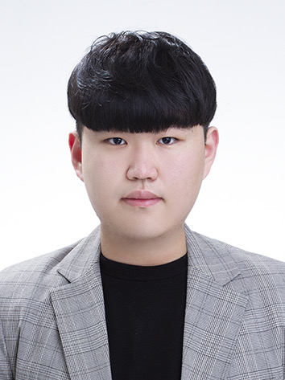
3D CAD · 하드웨어 설계 포트폴리오
설계 의도를 실제 제작과 주행 검증으로 연결한 프로젝트 중심 포트폴리오
김대웅 · 배재대학교 · Skyedge 하드웨어팀 3D CAD팀
핵심 역할
01 · 캡스톤 디자인 1
RC카 플랫폼을 활용한 자율주행 자동차 주행 구현
하드웨어 팀에서 차량 주행 도로 재료 선정, 차량 차체 제작 디자인, 주행경로 제작, 주행 환경 세팅과 하드웨어 부분 전체 관리를 담당했습니다.
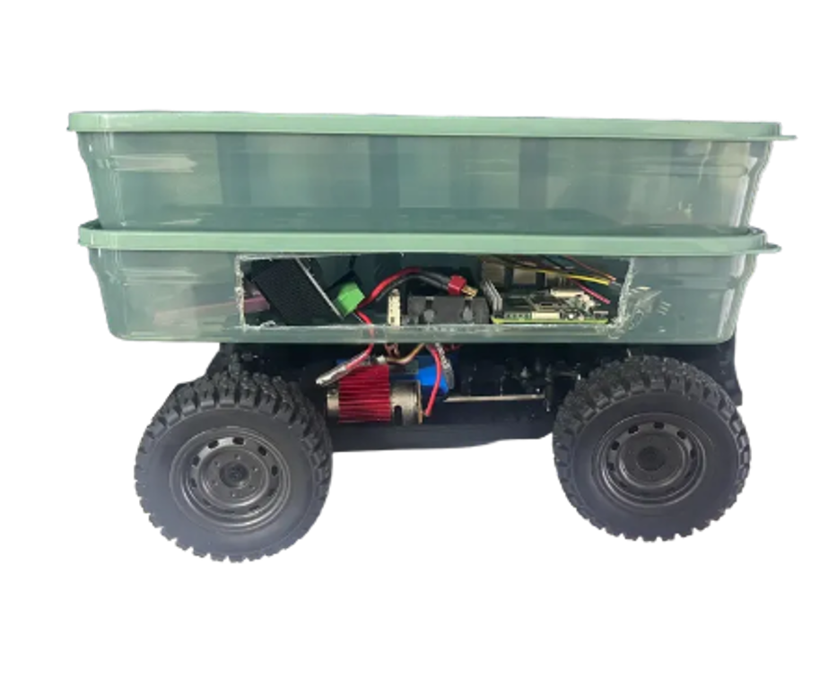


자율주행 코스 설계 및 주행 검증
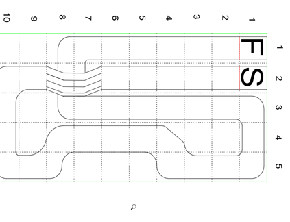
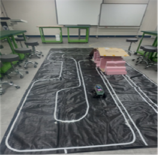
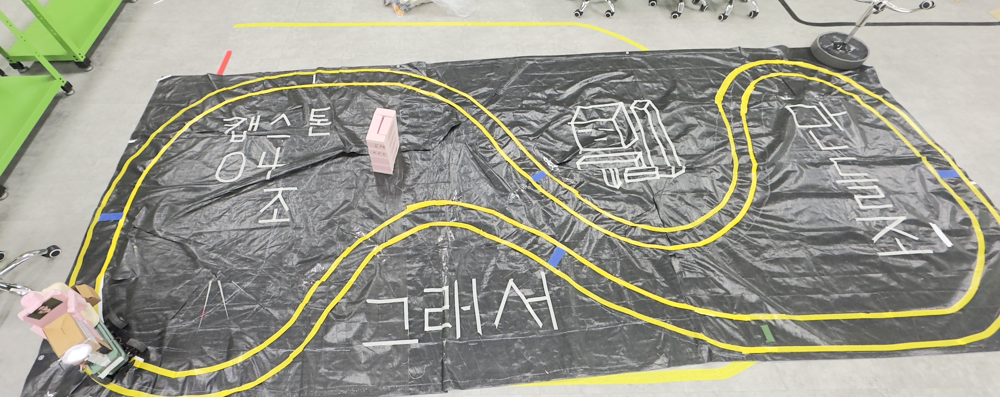
차체 제작과 주행환경 구축을 병행하고, 초기 도면에서 중간 코스와 최종 자율주행 코스로 발전시키며 주행을 검증했습니다.
주행 검증 영상 · 클릭하면 재생 화면으로 이동 · 무음
02 · 캡스톤 디자인 2
LAM 엔코더 융합 데이터 기반 자율주행 경로 매핑
3D 설계를 담당해 드론 하판부 구조, 부품 지지대, 조립 공간을 검토하고 제작을 위한 도면을 작성했습니다.


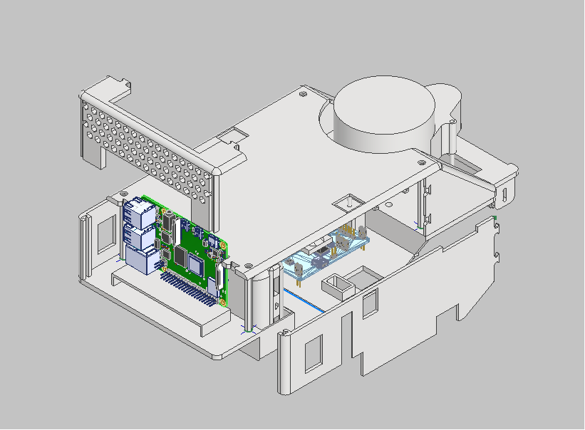
03 · Skyedge 한국로봇항공기 경연대회
Skyedge 동아리 하드웨어팀으로 VTOL 기체의 윈치·밸런싱·그리퍼·적재 구조 설계와 제작 검증에 참여했습니다.
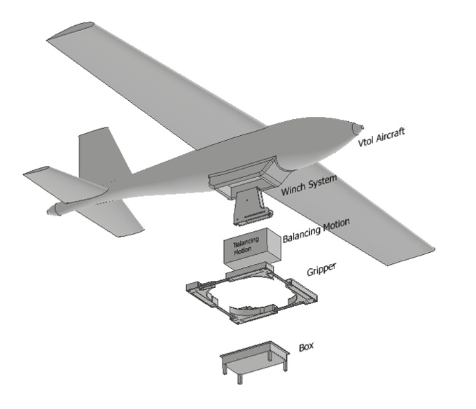


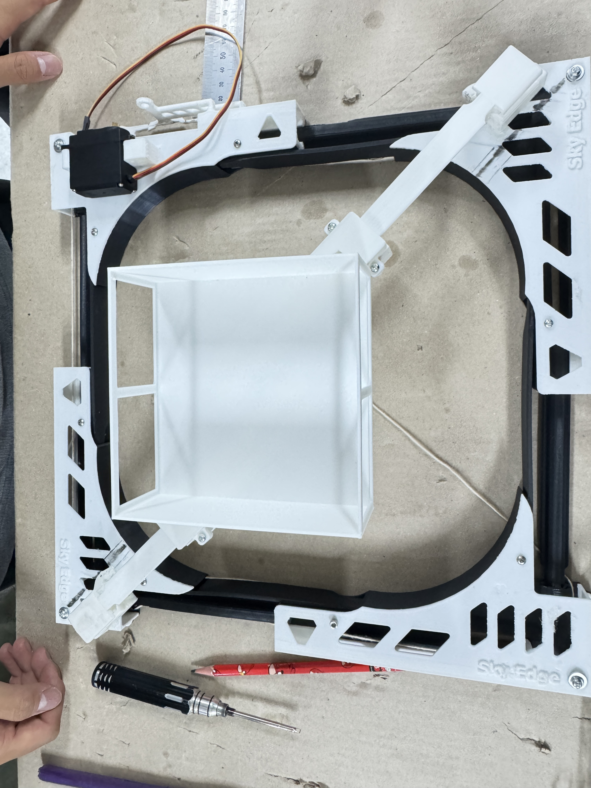
작동 검증 영상 · 무음
윈치 작동 영상
▶ 윈치 영상 열기그리퍼 작동 영상
▶ 그리퍼 영상 열기04 · 2026 전국 대학생 UAM 올림피아드
규제혁신부문 · 1차 합격 및 최종 진출 · 최종 일정 2026.11.05
Skyedge 동아리 내 별도 팀으로 참가했으며, 주제는 UAM 상용화 및 안전 운용을 위한 AI 기반 기체 신뢰등급제 규제 및 제도 기획이었습니다.
한국로봇항공기 경연대회와 별개의 활동이며, 윈치·그리퍼 자료는 포함하지 않았습니다. 규제혁신부문 준비 과정에서 전문가 기술컨설팅을 진행하고 의견서를 검토했습니다. 아래에는 공식 1차 합격팀 발표와 대표 의견서 1건을 선별해 배치했습니다.
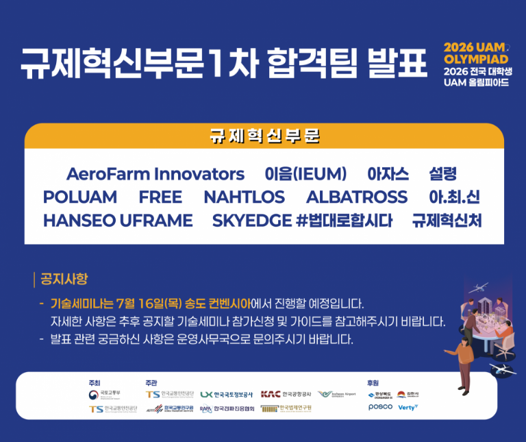
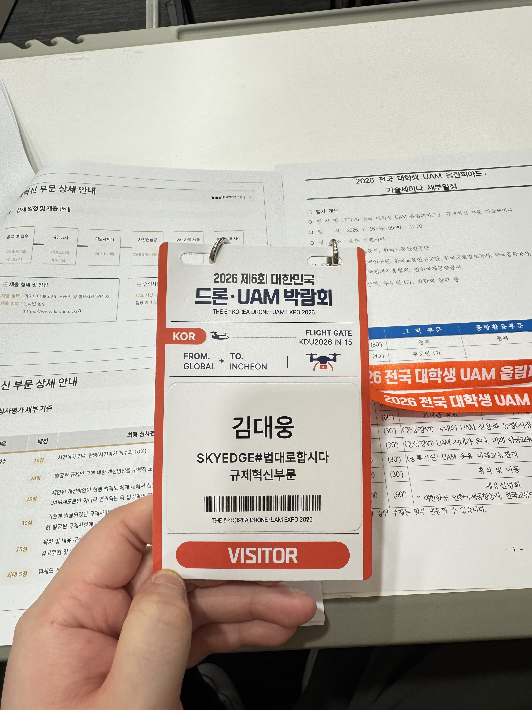
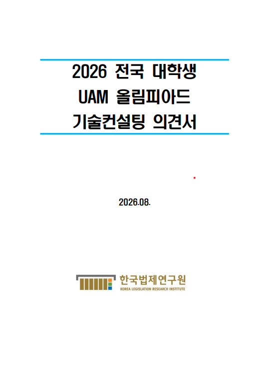
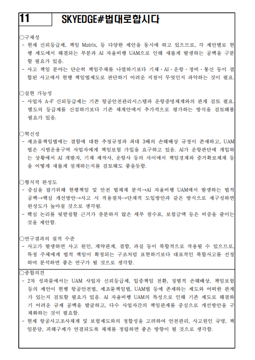
05 · 대외활동 및 자격
법무부 법무보호위원 대전지부 대학생위원회 미디어팀 1팀 팀장 · 2026.03.12 임명
법무부 법무보호위원 · 2024.12.27 위촉
| 구분 | 내용 | 취득·발급 |
|---|---|---|
| 초경량비행장치 | 조종자 자격증 1종 | 2025.09 |
| 정보기술자격 | ITQ 한글·파워포인트(한쇼) C등급 | 2014.03 |
| 국가기술자격 | 컴퓨터응용밀링기능사 | 2020.08.06 |
| Autodesk | Autodesk Certified User: AutoCAD | 2025.05.08 |
| Autodesk | Autodesk Certified User: 3ds Max | 2025.06.09 |
| Adobe | Visual Design Using Adobe Photoshop | 2025.11.13 / 유효기간 3년 |